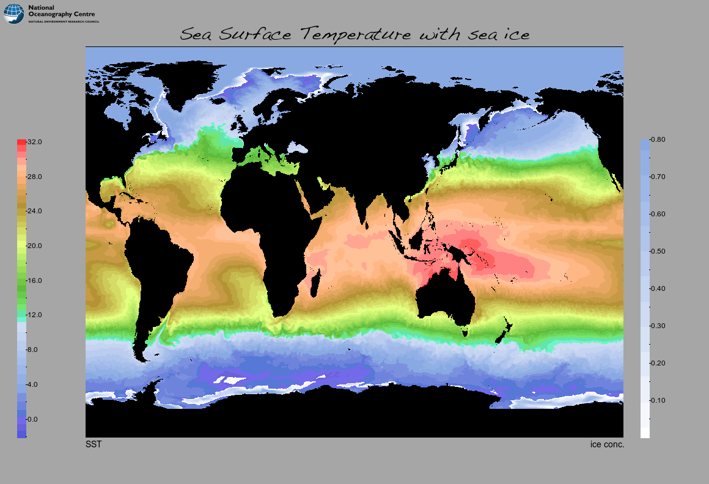
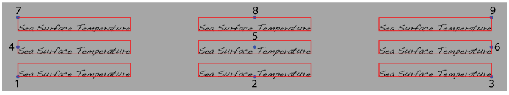
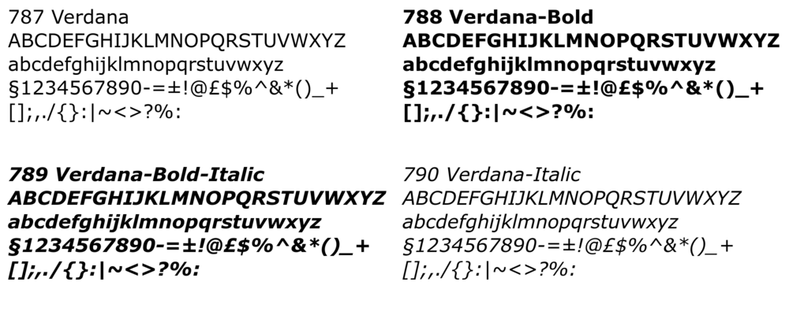

Most of the examples so far have relied on the default settings for many of the layout parameters. The results are reasonable but there is scope for refining images further by exercising control over settings such as:
This chapter is dedicated to explaining the layout controls and how to alter their settings. The explanation will be based on an examination of this image and its variants:
which was produced by this command:
./nemosim -f ./data/ORCA025_2001m01I.nc -o example12a.png -d isstempe -r 880 640 \
-nomask -show -spos 1 -stitle SST -title "Sea Surface Temperature with sea ice" \
-d2 ileadfra -limits2 0.0 0.8 -overlay -bbg #a6a6a6 -stitle2 "ice conc." \
-logo ./data/NOC_logo.png -lsize 158 50 -lpos 5 5 -tfnt "Handwriting---Dakota"
Several new elements have been introduced here so that the finer control over their appearance and placement can be discussed. The next section briefly describes the new elements.
This example has:
Note that string arguments containing spaces or dashes must be quoted. The fonts available can be listed using the ImageMagick identify utility. For example:
identify -list font | grep Font | grep -v glyphs
should produce an uncluttered list. The aspect ratio of the logo will be preserved so the resultant logo size will be determined by the limiting dimension. In this case the logo source image is: 511x113 so the requested size of 158x50 will provide a 158x35 pixel-sized image.
Apart from the logo placement, there are no explicit layout instructions given. To understand how the default layout is determined it is necessary to review the internal data structures, how the program variables relate to the layout and how default values are computed.
The -info option can be used to display the key internal data structures. For the current exercise only the first section (relating to the image control structure) of the output written to standard out is relevant:
./nemosim -as example12a.png -info
=====================================================================================
== Details of internal image control structure (im of type canvas): ==
== warning: long strings may be truncated to 48 characters ==
=====================================================================================
wi = pixel width main drawing area 880
ht = pixel height main drawing area 640
bl = pixel width of additional left margin 140
br = pixel width of additional right margin 140
bb = pixel height of additional base margin 76
bt = pixel height of additional top margin 76
sbl = pixel width of scale left margin 28
sbr = pixel width of scale right margin 98
sbb = pixel height of scale base margin 76
sbt = pixel height of scale top margin 228
spos = scale position, may not match input if overlaying 2
tfs = title font size (points) 30
tpx = title x-pixel position 580
tpy = title y-pixel position 19
tjs = title justification 8
stfs = scale title font size (points) 14
stpx(1:2) = scale title x-pixel position 140 1020
stpy(1:2) = scale title y-pixel position 716 716
stjs(1:2) = scale title justif. 7 9
sfs = scale annotation font size (points) 12
trnspbg = logical switch (0/1) for transparent background 0
trnspfg = logical switch (0/1) for transparent background 0
show = logical switch (0/1) to display the final image 1
imgtype = output image type 1=jpeg, other=png 0
logosx= = optional logo x-size 158
logosy = optional logo y-size 50
logox = optional logo x-position 5
logoy = optional logo y-position 5
day = optional day (part of date) 1
month = optional month (part of date) 4
year = optional year (part of date) 1958
drad = optional pixel radius of date clock 100
dposx = optional pixel xposition of date clock centre 100
dposy = optional pixel yposition of date clock centre 100
annox = optional pixel xposition of annotation 15
annoy = optional pixel yposition of annotation 15
annfs = optional annotation font-size 11
fn(MAX_STR) = image output filename: example12a.png
csn(MAX_STR) = colour scale palette filename: ./pals/pastel2.pal
ocsn(MAX_STR) = overlay colour scale palette filename: ./pals/seaice.pal
bg(MAX_STR) = background colour: black
fg(MAX_STR) = foreground colour: white
abg(MAX_STR) = alternative background colour: #9A9A9A
bbg(MAX_STR) = border background colour: #a6a6a6
bfg(MAX_STR) = border foreground colour: black
ttxt(MAX_STR) = title text: Sea Surface Temperature with sea ice
stxt(MAX_STR) = scale title text: SST
stxt2(MAX_STR) = scale title text for overlay var: ice conc.
tfnt(MAX_STR) = title font: Handwriting---Dakota
sfnt(MAX_STR) = scale font: Arial
stfnt(MAX_STR) = scale title font: Arial
logo(MAX_STR) = logo image file: ./data/NOC_logo.png
annot(MAX_STR) = annotation text:
This list contains settings which obviously correspond to values supplied on the command line (e.g. tfnt, wi, ht etc.) but also contains many other values with less obvious correspondence and/or default values. Before reviewing the correspondence between known and yet to be introduced command line options and the entries in this data structure it is useful to have a pictorial representation of some of the layout variables:

This diagram shows how the various layout variables are used to construct the image. Default values are set as fixed percentages of the main image size (wi x ht) which are the arguments given to the -r option. The values given to border widths and heights depend on the selected position for the colourbar. If no colourbar is requested (-spos 0 then the default behaviour is to disable all borders. The following table lists the default settings:
| spos | colourbar | bl | br | bb | bt | sbl | sbr | sbb | sbt |
|---|---|---|---|---|---|---|---|---|---|
| position | (%wi) | (%wi) | (%ht) | (%ht) | (%bl) | (%br) | (%bb) | (%bt) | |
| 0 | none | 0 | 0 | 0 | 0 | 0 | 0 | 0 | 0 |
| 1 or 2 | left or right | 16 | 16 | 12 | 12 | 20 | 70 | 100 | 300 |
| 3 | top | 16 | 16 | 12 | 12 | 300 | 100 | 70 | 20 |
| 4 | bottom | 16 | 16 | 12 | 12 | 100 | 350 | 70 | 20 |
| 5 or 7 | lhs arc-scale | 12 | 12 | 12 | 12 | 10 | 30 | 2 | 2 |
| 6 or 8 | rhs arc-scale | 12 | 12 | 12 | 12 | 10 | 30 | 2 | 2 |
Note also that the default positioning of titles and scale labels will also depend on the image size and choice of scale position. Of the various text font sizes, only the title text is scaled with image size; and only if the text height would otherwise exceed the border height. It is therefore always possible to request an image size or aspect ratio for which the default settings are inappropriate. For these cases, explicit control over all the layout variables is provided via the command-line options. The next section lists the options and the corresponding internal variables that they set. For brevity some options set multiple variables so it may be necessary to supply default values (as given by the -info option) for those components you wish the leave unchanged. See the ‘Setting margins’ section for an example of this.
| Cmd line option | arguments | description | variables set |
|---|---|---|---|
| -r | width height | image dimensions in pixels | wi ht |
| -margins | left right bottom top | margin sizes in pixels | bl br bb bt |
| -Margins | left% right% bottom% top% | margin sizes as percentages | bl br bb bt |
| -smargins | left right bottom top | margin sizes in pixels | sbl sbr sbb sbt |
| -Smargins | left% right% bottom% top% | margin sizes as percentages | sbl sbr sbb sbt |
| -title | title_text | title text | ttxt |
| -tpos | title_xpos title_ypos | title position | tpx tpy |
| -tjus | title_text_justification | title justification | tjs |
| -tfnt | title_font | title font | tfnt |
| -tfs | title_font_pointsize | title font-size (points) | tfs |
| -stitle | scale_title_text | scale title text | stxt |
| -stpos | scale_title_xpos scale_title_ypos | scale title position | stpx(1) stpy(1) |
| -stjus | scale_title_text_justification | scale title justification | stjs(1) |
| -stitle2 | 2nd_scale_title_text | 2nd scale title text | stxt2 |
| -stpos2 | 2nd_scale_title_x 2nd_scale_title_y | 2nd scale title position | stpx(2) stpy(2) |
| -stjus2 | 2nd_scale_title_text_justification | 2nd scale title justification | stjs(2) |
| -stfnt | scale_title_font | scale title font | stfnt |
| -stfs | title_font_pointsize | scale title font-size (points) | stfs |
| -sfnt | scale_font | scale number font | sfnt |
| -sfs | scale_font_pointsize | scale number font-size | sfs |
| -logo | logo_image_file | logo image file | logo |
| -lsize | logo_width logo_height | logo size limits | logosx logosy |
| -lpos | logo_xpos logo_ypos | logo position (top-left) | logox logoy |
| -annotate | xpos ypos label_text | optional extra annotation | annox annoy annot |
| -afs | annotation-font-size | extra annotation font-size | annfs |
The previous sections have shown how the image layout is controlled by various parameters, how to query what the default or current settings are for these parameters and finally how the available commad-line options relate to these parameters. Armed with this information, it is now possible to take control over the layout and refine images according to need or personal taste.
As a first example, consider a desire to reduce the external white space around the image whilst retaining all other relative sizes and positions. The obvious approach is to use either the -margins (absolute pixel values) or -Margins (% of image dimensions) option to set new border sizes. This will work in the bottom border case where all the default settings based on bb (sbb, stpx, stpy) will adjust correctly. The top border can also be reduced safely so long as care is taken to leave sufficient height to accommodate the logo height. However, changes to the side borders will change the appearance of the colorbars unless compensating changes are made to the scale margins (via -smargins or -Smargins). This is best demonstrated by a naive example to reduce all margins ( remembering their default values in this case are equivalent to -margins 140 140 76 76 ):
./nemosim -as example12a.png -o example12c.png -margins 80 80 42 42
To see the differences it is best to view this new image (left) alongside the orginal (right):

Mostly, the required result has been achieved but note the thinning and stretching of the colurbars and the slight vertical displacement of the title relative to the main image.
The original colourbars can be restored by noting that the thickness and length of the colourbar are given by:
width = bl - sbr - sbl
length = ht + bb + bt - sbt - sbb
which, for the original image, compute as:
width = 140 - 28 - 98 = 14
length = 640 + 76 + 76 - 76 - 226 = 490
Thus these settings could be used to restore the original dimensions:
./nemosim -as example12a.png -o example12d.png -margins 80 80 42 42 -smargins 14 52 42 192
since:
width = 80 - 14 - 52 = 14
length = 640 + 42 + 42 - 42 - 192 = 490
Now compare this new image (left) alongside the orginal (right):

Of course it is rarely necessary to match these dimensions precisely but the capability is there if required. Note similar calculations may be necessary if trying to match sizes for horizontal colourscales. In these cases the relevant widths and lengths will be given by:
length = wi + bl + br - sbl - sbr
width = bb - sbb - sbt or bt - sbb - sbt
The default positions of the title and scale titles will depend on the choice of colourscale position. The following table summarises the defaults. Note that all pixel coordinates are measured from the top left corner with y positive downwards. Firstly for the main title:
| scale position | main title x | main title y | justification |
|---|---|---|---|
| (spos) | tpx | tpy | tjs |
| 1, 2, 3, 7 or 8 | bl+0.5*wi | 0.85*bt | 2 |
| 4, 5, or 6 | bl+0.5*wi | bt+ht+0.85*bb | 2 |
and, secondly for the scale title. Note the second scale title (if present) will automatically take values for the opposite margin to that of the first:
| scale position | scale title x | scale title y | justification |
|---|---|---|---|
| (spos) | stpx(:) | stpy(:) | stjs(:) |
| 1, 3 or 7 | bl | ht+bt | 7 |
| 5 | bl | 0.25*bt | 7 |
| 2 or 8 | wi+bl | ht+bt | 9 |
| 4 or 6 | wi+bl | 0.25*bt | 9 |
The default label placements will not suit all uses but these values are easily over-ridden using the -tpos and -tjus options for the main title and the -stpos, -stjus and -stpos2, -stjus2 paired options for the scale titles.
Nine text justification options are provided as illustrated in this diagram:
where the blue dot represents a fixed -tpos coordinate with varying text justification choices and the red rectangle shows the computed boundary text box. Note that the use of these justification points depends on the ImageMagick calculation of text fontmetrics which provide a correctly sized bounding box for the text but not the box’s position. Consequently, there is scope for slight misplacement as demonstrated in the example above that does not bound the descending p correctly. Generally, though the method is accurate enough for an approximate placement that can be refined, if neccessary, within one iteration.
Each ImageMagick installation will have access to a variety of fonts. The exact list available will depend on the installation and may not even include all the fonts used in this cookbook. The ImageMagick utilities can be used to obtain a list of the available fonts:
identify -list font | grep 'Font:' | sed -e 's/.*: //' > fontlist
cat fontlist
AvantGarde-Book
AvantGarde-BookOblique
AvantGarde-Demi
AvantGarde-DemiOblique
Bookman-Demi
Bookman-DemiItalic
Bookman-Light
Bookman-LightItalic
Courier-BoldOblique
.
.
Yuppy-SC-Regular
Yuppy-TC-Regular
Zapf-Dingbats
Zapfino
ヒラギノ丸ゴ-Pro-W4
ヒラギノ丸ゴ-ProN-W4
ヒラギノ角ゴ-StdN-W8
The list can be long and not particularly useful unless you are just looking to confirm the presence of a known font. As an alternative, the bin/fontimg.sh script is provided to supply a visual illustration of the available fonts. In its basic form:
bin/fontimg.sh
will create a fontlist listing (using the identify command above) and then will produce one or more images (depending on the number of entries in fontlist) in which the entries are numbered and listed using their own fonts. Subsequent invocations of fontimg.sh can be made with numeric arguments corresponding to list positions. In these cases an enlarged view of the listed fonts will be produced. This secondary usage can be used in a single step to view known font families. For example, say you only wish to view the verdana fonts available on your system, then:
bin/fontimg.sh `grep -n -i verdana fontlist | sed -e's/:.*$//'`
will produce a series of onefontNNN.png images such as these four:
All the available fonts can be used for titles and scale labels by naming the required font via the -tfnt (title font) -stfnt (scale title font) -sfnt (scale font) options. In all cases the argument is the full string given in the fontlist listing. These strings will most often need to be quoted due to the presence of hyphens. [TBD need -afnt option to control annotation font too].
A facility is provided for an external image to be read and overlaid in any position on the working canvas. This is intended for adding a single logo and works best with png images using a transparent background. The ImageMagick tool, composite, should be used for more complex compositing of multiple images. The following three command-line options and arguments determine the source image, size and placement:
The simple ratio scaling algorithm used will maintain the aspect ratio of the logo so the resultant logo size may not be exactly that requested by the -lsize arguments. The actual size will be determined by the limiting dimension. For example, if the logo source image is 511x113, a requested size of 158x50 will provide a 158x35 pixel-sized logo. Whereas a requested size of 300x50 will provide a 226x50 pixel-sized logo.
{kind=link}
{kind=link}
{kind=link}